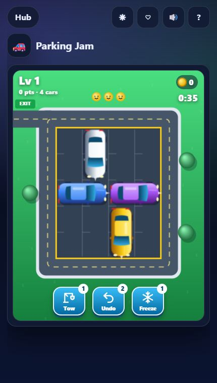
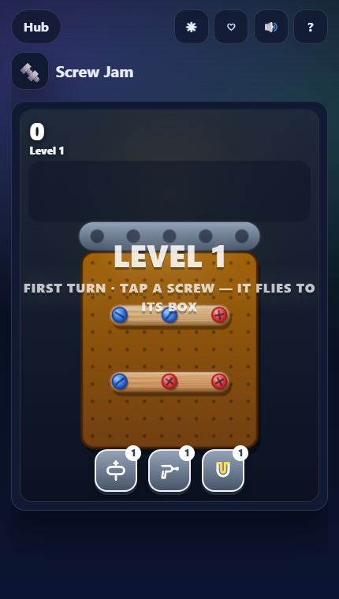
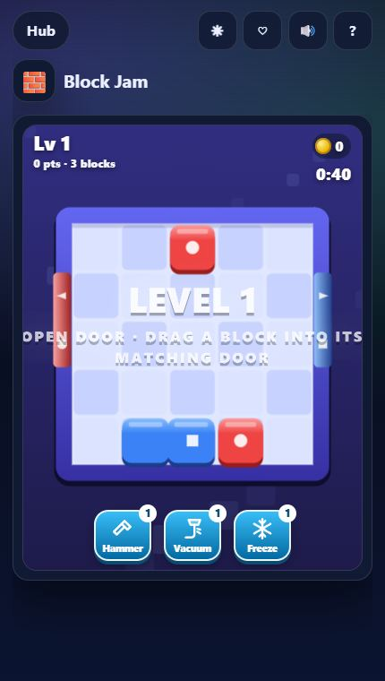
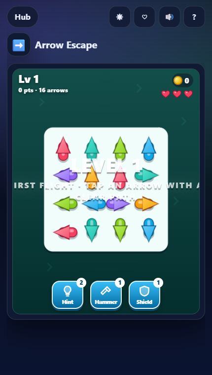
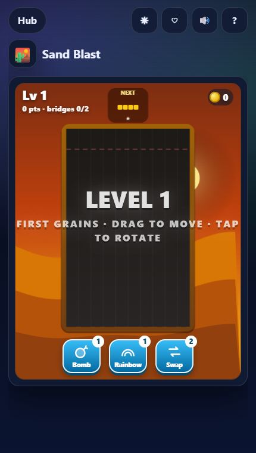

The one rule behind every jam puzzle
Bus Jam, Screw Jam and Goods Sort all share a hidden mechanic: a small buffer. A bench, a spare tray, an empty shelf slot. Anything you cannot place right now goes there — and when the buffer is full, you lose. So the real skill is not finding a move; it is never filling the buffer by accident.

Bus Jam
Tap a passenger with a clear path; matching colours board the bus at the stop (three seats), and full buses drive off. The wrong colour sits on the 5-seat bench.
- Before tapping, count how many of the current bus colour can reach the exit.
- Only send a passenger to the bench when it unblocks two or more others.
- Shuffle brings the right riders forward — save it for when the bench has 3+ people.

Parking Jam
Tap a car to drive forward or swipe along it to reverse. Blocked cars bump whatever is in their way — and every bump fills the drivers' anger meter.
- Find the car that blocks the most other cars and clear its path first.
- Do not test moves by tapping: a bump costs patience. Trace the path with your eyes.
- Iced cars thaw as others leave, so move them last.

Screw Jam
Tap a screw no plate is covering and it flies to the toolbox of its colour. No open box? It waits in the spare tray — and a full tray ends the level.
- Prefer screws that match the box that is open now.
- Top plates first: a plate only falls when its last screw is out, revealing everything under it.
- Icy screws need two taps — start on them early.

Block Jam
Slide colour blocks; they stop at the first obstacle. Push a block into a wall door of its colour and it slides out — if the door is wide enough.
- Clear blocks that sit in front of doors first; they jam everything behind them.
- Striped blocks move one way only — plan their lane before moving neighbours.

Goods Sort
Three identical goods on one shelf pop, and the goods behind slide forward. A timer and a lack of free slots are your enemies.
- Keep one slot free at all times — it is your working space.
- Clearing front rows reveals what is behind, so prefer clears that empty a shelf front.

Arrow Escape
Tap an arrow and it flies the way its head points; long arrows slither like a snake. Hit something and you lose one of three hearts.
- Start from the edges: arrows pointing outwards from the border are usually free.
- Stones never move — treat them as walls when planning.

Sand Blast
A Tetris-meets-sand hybrid: blocks crumble into sand, and one colour connected wall to wall blasts away.
- Build each colour as a flat layer — sand spreads, so tall towers waste it.
- Rainbow sand matches anything; save it to finish a nearly complete bridge.
When you are stuck
Every jam game in the Play Hub has boosters (Shuffle, Tow, Drill, Magnet, Hammer…) and coin upgrades such as a longer bench or a bigger spare tray. Buying space upgrades first makes every later level easier. And if you prefer growing things to clearing them, try our favourite merge games.